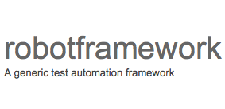

Introducing jSpringBot

Robotframework, GitHub
Built for Robotframework, and is managed through GitHub to help open source community.
Java, Maven, Spring
All libraries were build using Java and Spring Framework. Dependencies and test execution are done through Maven.